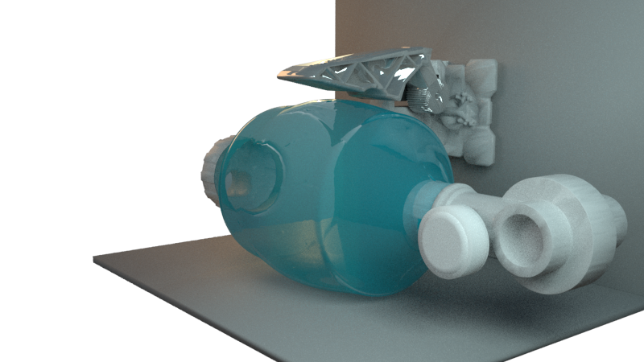

CoBreathCo
Automatización de un reanimador manual, como un medio potencial para la ventilación a largo plazo. Este es un uso completamente fuera de etiqueta, pero reconocemos el interés global cuando un hospital ha usado todos los ventiladores y la única opción es el embolsado manual de un paciente.
Esto puede permitir que los pacientes menos severos sean atendidos por médicos menos especializados, mientras que los recursos se centran en los más necesitados. Sin embargo, en ningún momento un paciente debe estar desatendido sin alguien capacitado disponible para monitorear directamente sus signos vitales.
El dispositivo puede ser configurado de manera remota por un profesional de la salud a través de la plataforma habilitada.
Ver más
Vital Box
Dispositivo de fácil instalación en los hogares, conectado a Internet que mide, temperatura, porcentaje de saturación de oxigeno en la sangre y ritmo cardiaco. Una vez se toma la medición, estos datos se subiran a la plataforma a la cual tienes acceso tanto los usuarios del dispositivos como los medicos locales y pueden tener asistencia, historial y monitoreo remoto en tiempo real.
Este dispositivo envía los datos a la plataforma en tiempo real y genera las alertas a los profesionales de la salud que tengan asignados los vital box.
Ver más
Funcionamiento
Una RED de monitoreo Remoto
La plataforma ofrece acceso para personas, profesionales de salud y centros locales
Personas
Los usuarios con dispostivos CoBreathCo y Vital Box pueden acceder a la plataforma para consultar el historico de las mediciones, la configuración actual de CoBreathCo y establecer rangos internos de alerta.
Médicos
Los médicos tienen un perimetro asignado de usuarios de los dispositivos CoBreathCo el cual pueden controlar las diferentes variables asociadas con el CoBreatchCo y recibir los datos en tiempo real de todas las mediciones realizadas por VitalBox.
Centros de Salud
En los centros de salud locales se encontrarán estos dispotivos para realizar la medicion en caso de no disponerlos en la casa, los datos asi mismo se suben a la plataforma y podrán ser consultados por los profesionales.
Aliados
Con el Apoyo de


Contáctanos
Para conocer más
Call:
+1 5589 55488 55s
Email:
ejemplo@gmail.com